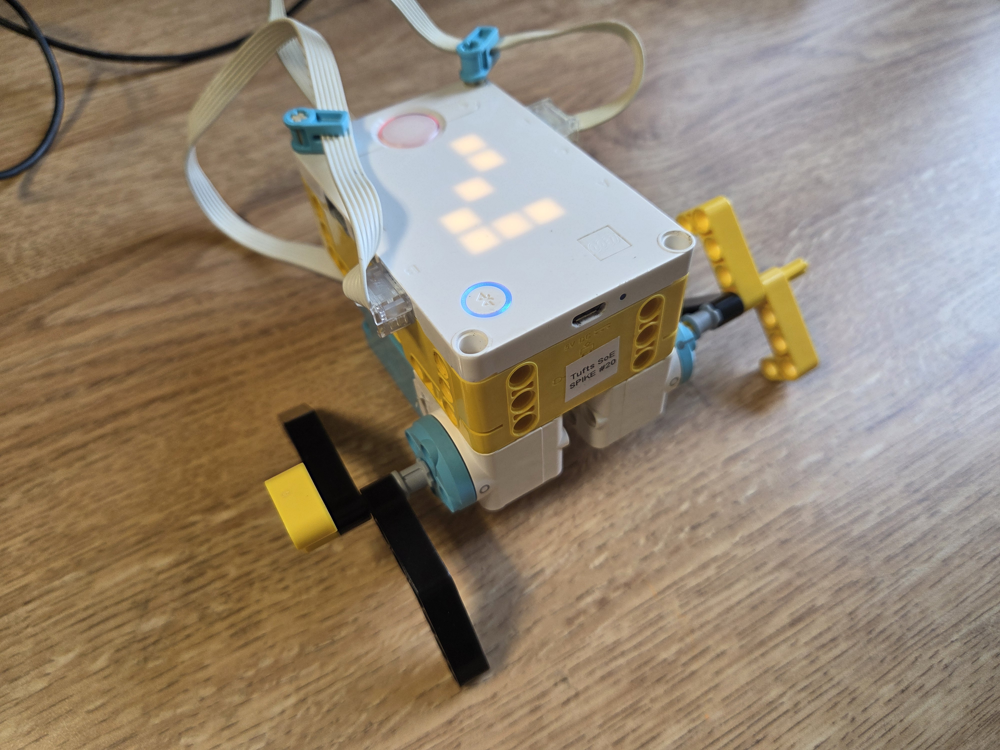
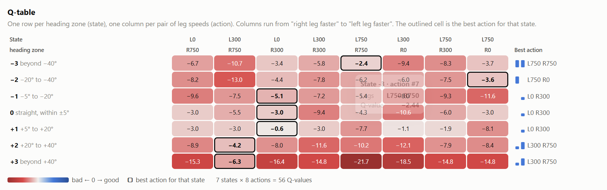

Building on the Color Search activity, we trained our silly walker robots to walk in a straight line. We used a more complicated Q-table: its states represented how far the robot was drifting left or right, and its actions adjusted the wheel motor speeds.
The training did not work well with very complicated leg configurations, and I kept getting negative values across the Q-table. My motor also disconnected during training, which reset my progress, so I was not able to deploy my modified robot with simpler legs. I worked with someone else whose robot walked much straighter after training, though it still sometimes turned and went off track.